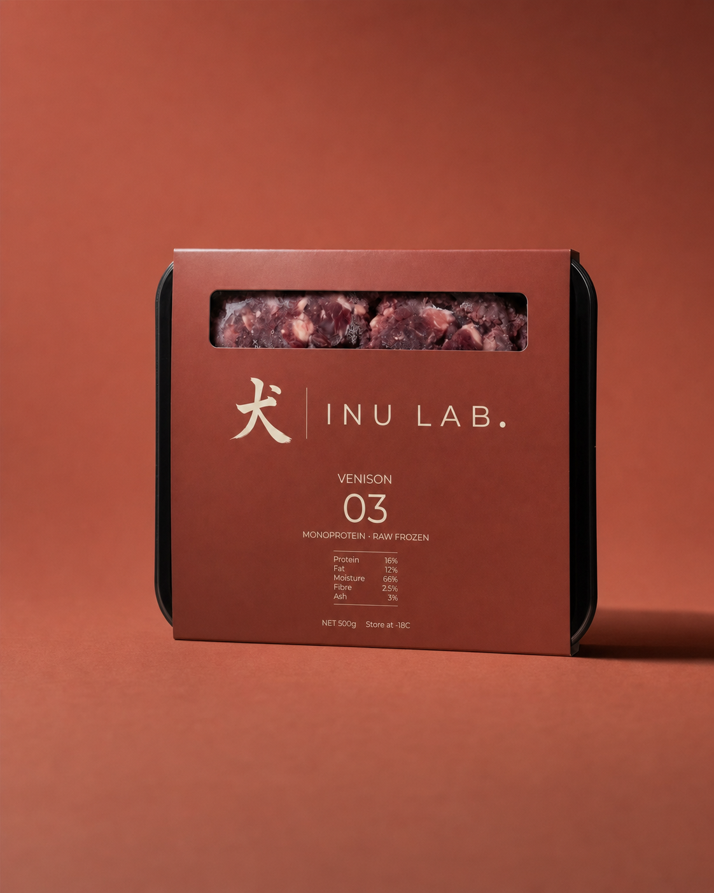
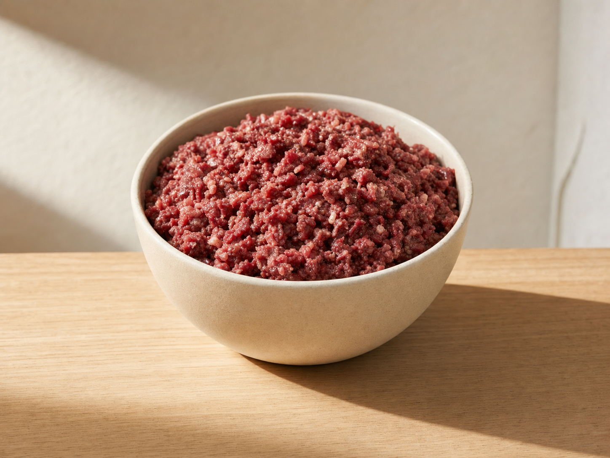

Clean digestion
One protein, no hidden blends. Easy to run an elimination diet and easy on a sensitive gut.

Recipe 03 · Monoprotein · Raw frozen
A lean red meat for everyday feeding and sensitive dogs. One named protein, no poultry, no filler. The nutrient analysis is printed on the pack, not hidden online.
Cold chain delivery in Vaud and Geneva. Pause or stop any time.
Why it works
What the dog gets
One protein, no hidden blends. Easy to run an elimination diet and easy on a sensitive gut.
Bone-based calcium and clean fat feed the coat. Owners see the change, they do not just read about it.
Sixteen percent protein and twelve percent fat, measured and printed. Steady fuel for everyday dogs.

How we keep it honest
Most wet food is cooked at high heat, then sold on a picture of the raw meat it no longer is. Venison 03 is portioned raw and frozen at minus eighteen within hours. The nutrient load you read on the pack is the load in the bowl.
Nutrient analysis
The same five figures appear on every pack. Only the recipe and its number change.
| Protein | 16 g / 100 g | |
|---|---|---|
| Fat | 12 g / 100 g | |
| Moisture | 66% | |
| Fibre | 2.5% | |
| Ash | 3% |
What you can trust
Every recipe is a single species. No blends, no meat meal, no vague "animal derivatives".
The full analysis is on the tray. You read it in the shop, not buried in a web page.
Raw frozen tray at home, freeze-dried trail pouch for travel. Same venison, same numbers.
Vets and retailers
One mixed case is twelve units. Frozen tray and freeze-dried pouch. Five working days from order.